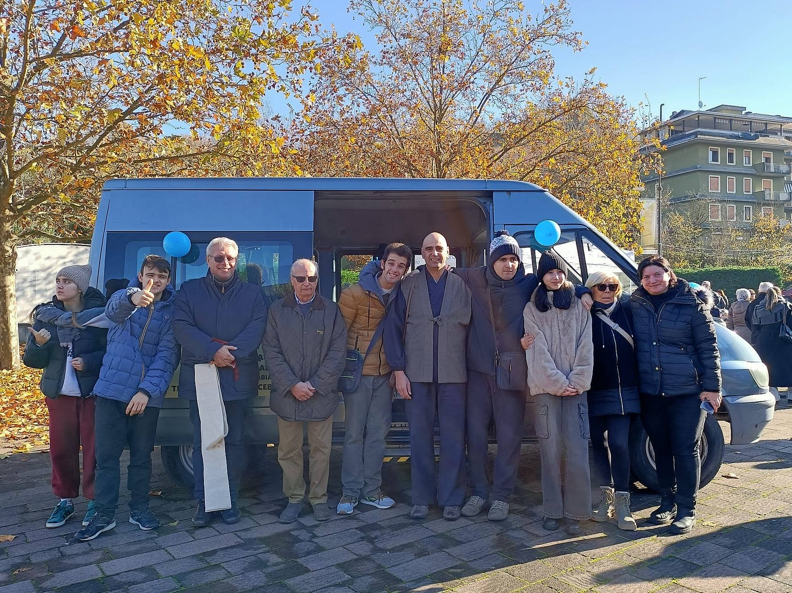

FUKUSHI BUKKYO 福祉仏教
LO ZEN NEL SOCIALE
"Il vero servizio nasce dal cuore vuoto"
KUGE DOJO 空華道場
ZAZEN - QIGONG - SHŌDŌ
"La pratica è la via, non la meta"
KOKORO NO IE 心の家
LA CASA DEL CUORE
"Insieme coltiviamo il seme della compassione"



Fiori Celesti APS è un'associazione di promozione sociale fondata sui principi del Fukushi Bukkyo (佛教福祉), la "Via del Benessere" che unisce la saggezza zen alle pratiche di inclusione sociale.
La nostra Casa Laboratorio, il Kuge Dojo (空華道場 - Dojo dei Fiori del Vuoto), è uno spazio aperto a tutti dove attraverso laboratori pratici, meditazione e arte promuoviamo la crescita personale, l'autonomia e il benessere della comunità.
Crediamo che ogni persona, indipendentemente dalle proprie capacità, possa fiorire e contribuire alla società attraverso la pratica, il lavoro manuale e la condivisione. I nostri percorsi di Zazen, Qigong e Shōdō si integrano con laboratori artigianali per offrire un approccio olistico al benessere.
"Kokoro no Ie" (心の家) - La Casa del Cuore: questo è ciò che vogliamo essere per la nostra comunità, un luogo dove coltivare insieme il seme della compassione e dell'inclusione.
Laboratori pratici per imparare l'arte della lavorazione del legno
Corsi per creare deliziose creazioni al cioccolato artigianale
Coltivazione biologica e cura dell'orto in un ambiente naturale
Laboratori psicomotori per il benessere fisico e mentale
Corsi per preparare gelato artigianale con ingredienti naturali
Corsi di modellazione e decorazione ceramica
Corsi di pittura e tecniche artistiche per tutti i livelli
| Giorno | Laboratorio per Ragazzi | Laboratorio per Adulti |
|---|---|---|
| Lunedì |
Gelateria
con Giuliano Curati
15:00 - 17:00
|
Gelateria
con Giuliano Curati
1 lezione serale/mese
|
| Martedì |
Qigong (Yoga Cinese)
con Carmine Shinko
16:00 - 17:00
|
Zazen (Meditazione Zen)
con Carmine Shinko
18:00 - 19:00
|
| Mercoledì |
Falegnameria
con Carmine
15:00 - 17:00
|
Qigong
con Carmine
18:00 - 19:00
|
| Giovedì |
Cioccolateria
con Manuela Fiscarelli
15:00 - 17:00
|
-
|
| Venerdì |
Gelateria
con Giuliano Curati
15:00 - 17:00
|
Shodo (Calligrafia Giapponese)
con Maurizio Anshu
|
| Sabato |
Ceramica
con Stefano Fedolfi
10:30 - 12:00
|
-
|
Viale Fidenza 12G
Tabiano Bagni, Salsomaggiore Terme (PR)